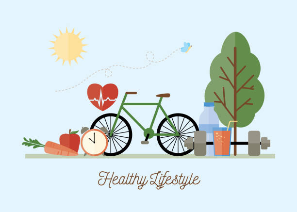

Outside of helping teams stay productive and balanced, I love spending time doing these things.
Traveling
When I have free time, I love to travel and explore new places. Whether it’s a quick weekend getaway or a longer adventure, I enjoy experiencing different cultures, trying new foods, and discovering hidden gems. Traveling gives me a fresh perspective, helps me recharge, and fuels my creativity. There's nothing quite like the excitement of visiting somewhere new and making unforgettable memories along the way.
Food & Cooking
I love to get creative in the kitchen. Cooking is one of my favorite ways to unwind and experiment with new recipes. I enjoy trying out different cuisines, from comforting home-cooked meals to more adventurous dishes. There’s something so satisfying about creating a meal from scratch, and it’s even better when I get to share it with friends or family. It’s a perfect way for me to relax and express my creativity outside of work.
Fitness & Wellness
I like to focus on my fitness and wellness. Whether it’s hitting the gym for a good workout, going for a run, or practicing yoga, staying active is important to me. It helps me clear my mind, boosts my energy, and keeps me feeling strong both physically and mentally. I also enjoy spending time outdoors, whether it's hiking in nature or just getting some fresh air. Taking care of my body is a big part of maintaining a healthy work-life balance.